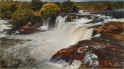
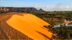

Descobrindo o Jalapão
O Jalapão é uma região encantadora localizada no estado do Tocantins, Brasil. Conhecido por suas belezas naturais, o Jalapão é um destino imperdível para os amantes da natureza e da aventura.
Imagens:


Vídeos:
Descobrindo o Jalapão:
O Jalapão é famoso por suas paisagens únicas, que incluem dunas de areia dourada, cachoeiras e fervedouros. A região é um paraíso para quem gosta de fazer trilhas e explorar o cerrado.
Aventuras no Jalapão:
Algumas das atrações mais populares do Jalapão incluem a Cachoeira da Velha, a Pedra Furada e os fervedouros, onde a água brota do fundo e ajuda os visitantes a flutuar.
Tabela de Dados Fictícios:
| Atividade | Duração | Nível de Dificuldade |
|---|---|---|
| Trilha até a Cachoeira da Velha | 4 horas | Moderado |
| Rafting no Rio Novo | 1 dia | Alto |
| Passeio de 4x4 pelas Dunas | 6 horas | Fácil |